Eventos en JavaScript
Los eventos se pueden definir como cualquier cambio o suceso que ocurra en la página desde el momento en que esta carga, en sí, un evento puede ser desde el scroll del usuario por la página hasta presionar un botón, en cierto modo casi cualquier interacción con los elementos HTML se puede considerar un evento.
La utilidad de los eventos consiste en que se puede asignar un código mediante JavaScript a un elemento, el cual se ejecutará en caso de que el elemento experimente un evento definido.
IMPORTANTE: Todo lo relacionado a los eventos y el objeto "event" está en El apartado de w3schools sobre los eventos.
Handlers
Se trata de manejadores de eventos, en el pasado llegó a ser la forma predilecta en la que se manejaban los eventos JavaScript, consistían en un indicativo del estado seguido del nombre del evento, por ejemplo "onclick" (no aplica el camelCase), sin embargo este método posee múltiples problemas que hicieron que dejase de emplearse, por ejemplo genera un error si el elemento en cuestión no acepta JavaScript, o si el usuario desactiva el JavaScript en el sitio, por lo que el código nunca se ejecutaría.
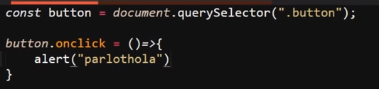
Debido a esto hoy en día existen mejores formas de trabajar los eventos de un sitio web por lo que el uso de estos recursos no es para nada recomendado.
Event Listeners (Escucha de Eventos)
Se trata de una propiedad que se le puede aplicar a un elemento HTML (recordar que se tratan como objetos), para lo cual se utiliza el nombre de la variable donde se almacena el elemento, seguido del punto (.) para vincular la propiedad, seguido de la palabra clave "add" junto con el nombre de la propiedad "EventListener", luego entre paréntesis ( ) se define el evento con el que se accionará el código, se usa una coma (,) como separador y luego se define el nombre de la función que se ejecutará en el evento.
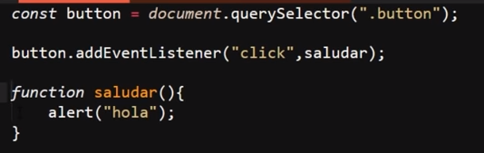
Por lo tanto la estructura de un "event listener" al ser aplicado a un elemento HTML recibe dos datos, el primero un string el cual es el nombre del evento seguido de la función que se ejecutará en este
Una particularidad de los "eventListener" es que estos no aceptan parámetros como datos, únicamente funcionan al definirse el evento y su correspondiente función, del mismo modo que estos no aceptan las funciones flecha, por lo tanto es necesario definir sus funciones con la estructura tradicional.
Sin embargo existe una forma de que estos eventos acepten las funciones flecha, esto se logra definiendo la función flecha directamente dentro de los paréntesis del "event listener", de la siguiente manera:
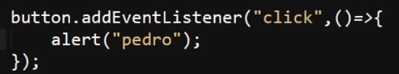
Una alternativa que ofrecen los "eventListener" es que pueden ser removidos en cualquier momento, para lo cual se reemplaza la palabra clave "add" que se encuentra antes del nombre del método "eventListener" por "remove", quedando de este modo:
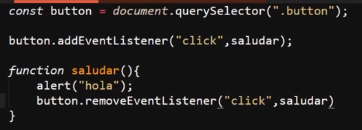
En este ejemplo se puede apreciar el cómo se selecciona un elemento HTML por su clase, luego se le aplica el "eventListener" con el evento "click" y la función "saludar", la cual a su vez remueve el evento del elemento una vez se ejecuta, por lo tanto al hacer "click" sobre el elemento este disparará una alerta, pero solo lo hará la primera vez, ya que una vez se ejecute la función esta removerá el evento.
Nota: solo se puede remover el evento con las funciones asociadas, si se intenta remover desde una función que sea llamada por la función asociada no funcionará
Ejemplo
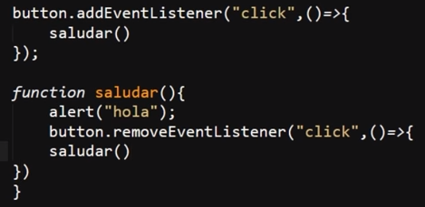
En este ejemplo la función saludar se ejecutará, sin embargo el evento no será removido, por lo tanto se podrá ejecutar una y otra vez en lugar de solo poder hacerlo una vez tal y como se desea.
Objeto Event
Se trata del único parámetro que puede ser recibido por los "eventListener", al definirse en lugar de la función se realiza la vinculación a este objeto, de ese modo se podrá utilizar cualquiera de las Propiedades o métodos de este en el evento, para llamarlo se puede nombrar de la forma que se desee, ya que al ser el único parámetro posible sin importar el cómo se nombre al ingresarse el parámetro este retornará el objeto "Event".
Ejemplo
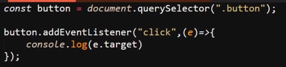
Resultado
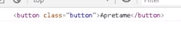
En este ejemplo se puede apreciar el cómo se utiliza una función flecha para ingresar el parámetro a la función, de ese modo en un "console.log" se utiliza el método ".target", el cual es un método del objeto "event" que retorna el elemento al que se le aplicó el evento, por lo tanto lo que hace el evento del ejemplo es imprimir el elemento HTML en la consola.
Nota: en este ejemplo se nombró al parámetro como "e" (de event), sin embargo se puede nombrar como se plazca ya que el objeto retorna por defecto, del mismo modo se puede usar cualquiera de los otros métodos o propiedades del objeto.
En sí el objeto event posee multitud de métodos y propiedades, las cuales permiten conocer el status y todas las características del evento o del elemento que lo desencadenó, realmente es inmensa la cantidad de opciones que posee este objeto, para analizarlo en profundidad se puede indicar que se imprima el objeto event en consola y de ese modo todos los recursos de este podrán ser explorados
Ejemplo
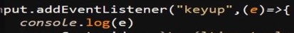
Resultado
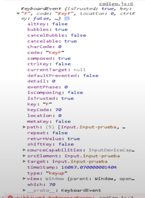
Event Flow (Flujo de Eventos)
Esto se refiere al orden en el que se ejecutan los eventos de un elemento padre y de un elemento hijo, por defecto JavaScript cuenta con dos formas de organizar estos eventos:
-
Event Bubbling (Evento Burbuja): Se trata del orden por defecto de JavaScript, consiste en ejecutar primero los eventos correspondientes a los elementos hijos, y luego los eventos de los elementos padre, de ese modo un evento del elemento hijo del elemento hijo se ejecutaría antes que este y así sucesivamente, siempre se empieza por el evento del elemento hijo de menor rango.
-
Event Capturing (Evento de Captura): Se trata del orden alternativo, consiste en ejecutar primero los eventos correspondientes a los elementos contenedores, seguido de los eventos de los elementos hijos, de ese modo el evento del contenedor de mayor rango se ejecutará primero que cualquier otro, y el orden irá descendiendo entre las generaciones de elementos hijos.
Para aplicar el flujo de eventos de captura es necesario ingresar "true" como un tercer valor en el método "eventListener", por lo tanto para modificar el orden por defecto, se ingresa "true" después del nombre de la función o de la función flecha, según sea el caso, lo esencial es que este valor debe estar ingresado de último.
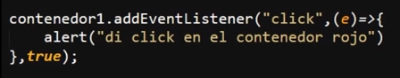
Nota: si existen más de dos eventos padres e hijos en una sola interacción se puede alternar el orden de los eventos ya que aquellos que posean el valor "true" definido se ejecutarán en base al flujo "capturing", mientras que aquellos que no conservarán el evento por defecto (bubbling), por lo tanto, a todos aquellos eventos que se desee que modifiquen su flujo por defecto se les debe indicar el tercer valor "true".
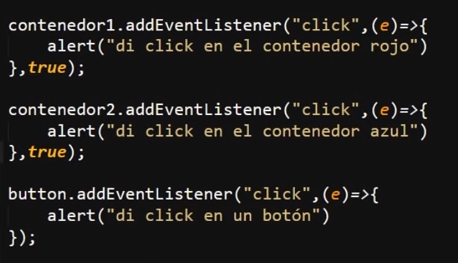
Nota: De ese modo también si solo se marca un único evento con el valor True ese se ejecutará primero que cualquier otro.
StopPropagation
Se trata de una forma de indicar que cuando existan varios eventos padres e hijos en una misma interacción como en el ejemplo anterior la ejecución de estos se detenga luego de ejecutar el evento actual, es decir esta propiedad del objeto "event" para la propagación del evento al ser ejecutado.
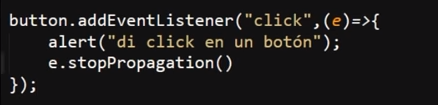
Nota: Todos aquellos eventos que se ejecuten antes utilizando el flujo "capturing" (añadiendo el tercer valor "true") no se verán afectados por este método.
Eventos del Mouse
Se trata de todos los eventos que pueden ser generados por el ratón, así como cuándo y para qué se usan:
-
Click: Ocurre cuando se hace click sobre un elemento HTML
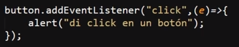
-
Dblclick: Ocurre cuando se da dos veces click sobre el mismo elemento en menos de 0.5 seg
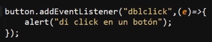
-
Mouseover: Ocurre cuando el mouse se mueve sobre un elemento o sobre uno de sus hijos
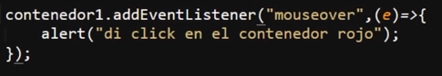
-
Mouseout: Ocurre cuando se mueve el mouse fuera de un elemento o de uno de sus hijos
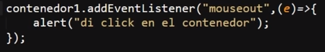
-
Contextmenu: Ocurre cuando se da click derecho en un elemento para abrir un menú contextual
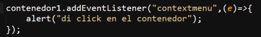
-
Mouseenter: Ocurre cuando el mouse se mueve sobre un elemento, con la diferencia de que este evento es especial para Internet Explorer, fuera de eso no se diferencia en nada
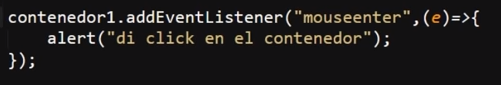
-
Mouseleave: Ocurre cuando el mouse se mueve fuera de un elemento, con la diferencia de que se activará cuando el mouse deje el elemento, no a sus hijos
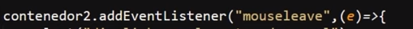
-
Mousedown: Ocurre cuando el usuario presiona un botón del mouse sobre un elemento
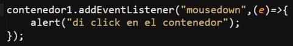
-
Mouseup: Ocurre cuando el usuario suelta el botón del mouse sobre un elemento
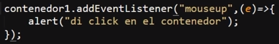
-
Mousemove: Ocurre cuando el mouse se mueve mientras está sobre un elemento, por lo tanto mientras el mouse se mueva el evento seguirá ejecutándose
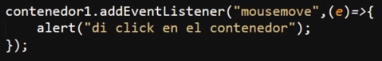
Eventos del Teclado
Se trata de todo tipo de suceso que involucre alguna de las teclas del teclado.
-
Keydown: Ocurre cuando una tecla se deja de presionar
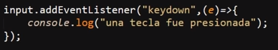
-
Keypress: Ocurre cuando una tecla se presiona y suelta en un elemento
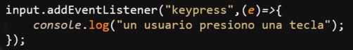
-
Keyup: Ocurre después de que los dos eventos anteriores hayan ocurrido consecutivamente
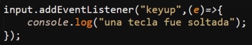
Eventos de la Interfaz
-
Error: Ocurre cuando sucede un error durante la carga de un archivo multimedia
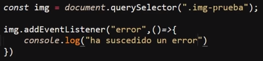
-
Load: Ocurre cuando un objeto se ha cargado
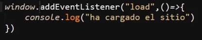
Nota: Para acceder al body del documento no es necesario declarar una variable que lo vincule, para esto existe el objeto window, el cual a su vez no es obligatorio indicarlo, ya que por defecto si solo se define addEventListener este objeto será seleccionado
-
Beforeunload: Ocurre antes de que el documento esté a punto de descargarse, es decir antes de que se inicie la carga de la nueva dirección a la que se dirigirá el usuario al abandonar la página.
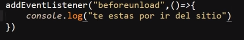
Nota: Es decir este evento se dispara antes de abandonar el sitio
-
Unload: Ocurre una vez se ha descargado una página, es decir una vez se hace la carga de la nueva dirección a la que se dirigirá el usuario al abandonar la página
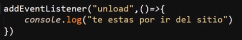
Nota: Es decir este evento se dispara al abandonar el sitio
-
Resize: Ocurre cuando se cambia el tamaño de la vista del documento
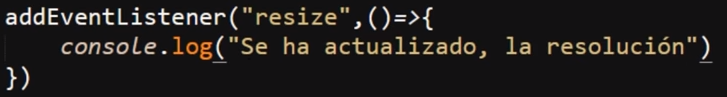
-
Scroll: Ocurre cuando se desplaza la barra de desplazamiento de un objeto
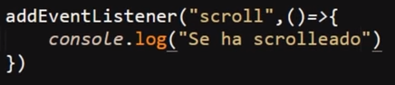
-
Select: Ocurre cuando el usuario selecciona un texto de un input o un text area
Código
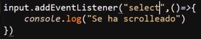
Ejemplo evento
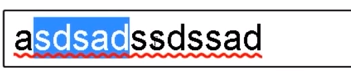
Resultado
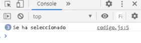
Este tipo de eventos al igual que cualquier otro puede ser usado en conjunto con el objeto "event" para generar nuevas funcionalidades, por ejemplo:
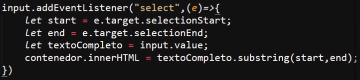
En este ejemplo se vinculan los elementos HTML, luego se activa el escuchador de eventos, al cual se le indica que reciba el objeto event, para usar su propiedad ".target", la cual permite vincular al objeto que desencadenó el evento, la cual a su vez usa la propiedad de selectionEnd y selectionStart, para definir la posición de inicio y final de la zona en la que se desencadenó el evento.
De este modo al tener vinculado no solo el elemento que desencadenó el evento, sino también el inicio y final de la zona de este, se usa la propiedad "subString", la cual permite extraer una zona de un texto para lo cual se le indica que reciba el inicio y final del evento, de ese modo se obtiene la sección del texto que ha desencadenado el evento, el cual en este caso se trata de ser seleccionado por el usuario.
De ese modo el texto seleccionado por el usuario se captura y se imprime en el interior del segundo input.
Resultado
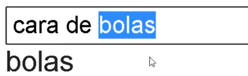
Nota: para este ejemplo hubiese sido mejor usar el "textContent" en vez de "innerHTML"